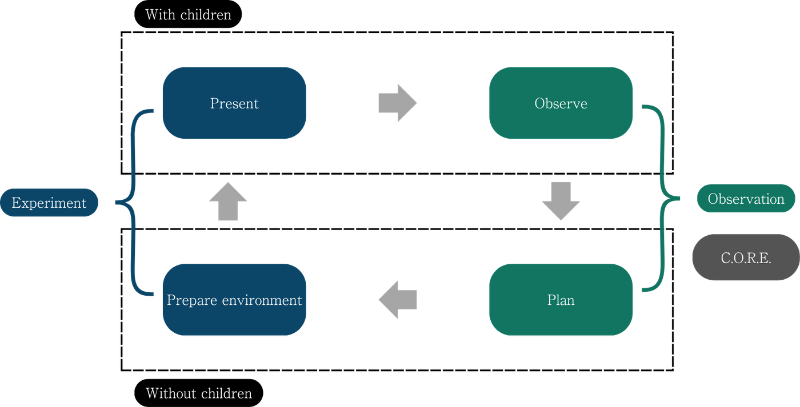

Home › Observation
The scientist's stance
Observation
The Montessori Method is a scientific method — and so it requires observation of what is actually happening. Observation is a central part of the process: it provides the input that truly lets the spirit of the child grow.

The purpose of observation
Inexperienced teachers often place great importance on teaching and believe they have done everything necessary once they have demonstrated the materials meaningfully. In reality, the teacher's task is far greater: to guide the development of the child's spirit. Every observation must, in the end, justify itself through the teacher's ability to help the child.
The work makes a child concentrate.
The concentration develops the child.
Observation, then, has the objective to develop the child.
Some of the reasons to observe:
- Understand the child.
- Identify a student's learning style, strengths, personality and interests.
- Assess the student's growth and academic progress.
- Guide the child's developing spirit and make better pedagogical decisions.
- Adapt presentations to the child's needs, interests and styles; modify the learning environment.
- Develop the spirit of a scientist and form habits of observation.
- Engage in investigation and discovery; share and communicate findings.
- Gain insight into ourselves and our Montessori practice, and strengthen our learning community.
- Develop an observational literacy and discover new "secrets" of childhood.
The process of observation — C.O.R.E.
Observation can follow a method developed by Paul Epstein (PhD), built on the C.O.R.E. concept, which divides the process into four steps.
Connect
To observe, we must first define what and why we are going to observe — because the reason we are observing changes what we observe. That purpose (the guiding question) must be clear and defined before the observation begins.
We are entering into a noble field, because we are following in the first steps of the path which leads to science and is the beginning of that which will make us scientists.
Montessori, Maria. Some Suggestions and Remarks Upon Observing Children (London Course, 1921, Lecture 3).
Obtain
Obtaining the information follows four steps:
- Prepare to observe — get ready mentally and emotionally; do not interfere or disturb what is happening.
- Select one or more recording methods — journals, physical maps, anecdotal records, running records, checklists, evaluation scales, time samples.
- Manage the observation — create a routine, let the children know you will observe, ask other adults to help, and manage the data collected.
- Write your observation plan — plan what will be observed, how and when, and follow that plan.
Reflect
Reflection happens before, during and after the observation. It is a crucial step that guides all the others — we must always reflect on everything that is being observed and known.
Engage
To engage, think about four steps:
- Personal growth — engage in personal renewal, self-care and spiritual preparation.
- Allow the child's spiritual growth — prepare the environment and let the child's spirit grow.
- Meaningful planning — reflect and plan what can help the child: change what isn't working, define limits, re-present lessons, adjust the routine, evaluate your own behavior.
- Implement and observe the plan — decide in advance how it will be evaluated, then implement it consistently, adjusting after reflection if needed.
The real preparation for education is the study of one's self. The training of the teacher who is to help life is something far more than the learning of ideas. It includes the training of character; it is a preparation of the spirit.
Montessori, Maria. The Absorbent Mind.
Back to the foundations
Observation serves the guiding principles that shape the whole Montessori philosophy.